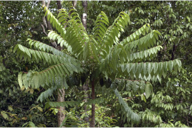
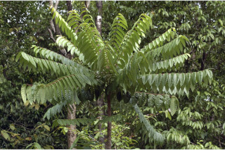

Tall trees up to 15 m tall.
15 ಮೀ ಎತ್ತರದವರೆಗಿನ ಮರಗಳು.
Tall trees up to 15 m tall.
மரங்கள் 15 மீ. உயரம் வரை வளரக்கூடியது.
Bark greyish, lenticellate; blaze yellow with red speckles.
ತೊಗಟೆ ಬೂದು ಬಣ್ಣದ ಛಾಯೆಯಲ್ಲಿರುತ್ತದೆ;ಕಚ್ಚು ಮಾಡಿದ ಜಾಗ ಹಳದಿ ಬಣ್ಣದಲ್ಲಿದ್ದು ಕೆಂಪು ಮಚ್ಚೆಗಳ ಸಮೇತವಿರುತ್ತದೆ.
Bark greyish, lenticellate; blaze yellow with red speckles.
மரத்தின் பட்டை சாம்பல் நிறமானது, பட்டைத்துளைகள் (லெண்டிசெல்லேட்) உடையது; உள்பட்டை மஞ்சள் நிறமானது மற்றும் சிவப்பு நிற புள்ளிகளுடையது.
Young branchlets terete, with scars of fallen leaves; apical bud tomentose.
ಎಳೆಯ ಕಿರುಕೊಂಬೆಗಳು ದುಂಡಾಗಿದ್ದು,ಉದುರಿದ ಎಲೆಗಳ ಗುರುತುಗಳ ಸಮೇತವಿರುತ್ತವೆ;ತುದಿಯಲ್ಲಿನ ಎಲೆಮೊಗ್ಗುಗಳು ದಟ್ಟ ಮೃದು ತುಪ್ಪಳದಿಂದ ಕೂಡಿರುತ್ತವೆ.
Young branchlets terete, with scars of fallen leaves; apical bud tomentose.
சிறியநுனிக்கிளைகள் குறுக்குவெட்டுத் தோற்றத்தில் வளையமானது, இலைகள் உதிருவதனால் ஏற்படும் தழும்புகளுடையது; நுனியிலுள்ள மொட்டு உரோமங்களுடையது.
Leaves compound, imparipinnate, alternate, spiral, crowded towards twig ends, to 1 m long; rachis pulvinate, subterete, glabrous; petiolule 0.3-0.7 cm long, glabrous; leaflets 11-21 pairs, alternate or subopposite, increasing size towards apex, 5-14 x 3-5 cm, elliptic-oblong to oblong-lanceolate, apex acute or acuminate, base asymmetric, margin entire and revolute, glaucous, tomentose beneath when young, later glabrous; midrib raised above; secondary_nerves 8-16 pairs, glands present at the fork near margin; tertiary_nerves broadly reticulate.
ಎಲೆಗಳು ಸಂಯುಕ್ತವಾಗಿದ್ದು ಅಸಮಗರಿ ರೂಪಿಗಳಾಗಿರುತ್ತವೆ, ಪರ್ಯಾಯ ಮತ್ತು ಸುತ್ತು ಜೋಡನಾ ವ್ಯವಸ್ಥೆಯಲ್ಲಿದ್ದು ಕುಡಿ ಕೊಂಬೆಗಳ ತುದಿಯಲ್ಲಿ ಗುಂಪಾಗಿರುತ್ತವೆ; ಅಕ್ಷದಿಂಡು ಉಬ್ಬಿದ ಬುಡದ ಸಮೇತವಿದ್ದು,ಉಪ-ದುಂಡಾಗಿರುತ್ತವೆ, ರೋಮರಹಿತ -ವಾಗಿರುತ್ತದೆ;ಉಪತೊಟ್ಟು 0.3-0.7 ಸೆಂ.ಮೀ.ವರೆಗಿನ ಉದ್ದವಿದ್ದು, ರೋಮರಹಿತ -ವಾಗಿರುತ್ತದೆ;ಉಪಪತ್ರಗಳು 11 ರಿಂದ 21 ಇದ್ದು, ಪರ್ಯಾಯವಾಗಿ ಅಥವಾ ಉಪಅಭಿಮುಖಿಯಾಗಿರುತ್ತವೆ, ಮತ್ತು ಮೇಲೆ ಹೋದಂತೆಲ್ಲಾ ಗಾತ್ರ ಹೆಚ್ಚುತ್ತಾ ಹೋಗುತ್ತದೆ,ಗಾತ್ರದಲ್ಲಿ 5-14 X 3 - 5 ಸೆಂ.ಮೀ. ಹೊಂದಿದ್ದು,ಅಂಡವೃತ್ತ-ಚತುರಸ್ರದಿಂದ ಚತುರಸ್ರ-ಭರ್ಜಿ ರೀತಿಯವರೆಗಿನ ಆಕಾರ,ಚೂಪಾದ ಅಥವಾ ಕ್ರಮೇಣ ಚೂಪಾಗುವ ತುದಿ,ಅಸಮ್ಮಿತಿಯಾದ ಬುಡ,ನಯವಾದ ಮತ್ತು ಹಿಂಸುರುಳಿಗೊಂಡ ಅಂಚು,ಮಾಸಲು ಬೂದು ಹಸಿರು ಬಣ್ಣವನ್ನು ಹೊಂದಿದ್ದು ಎಳೆಯದಾಗಿದ್ದಾಗ ದಟ್ಟ ಮೃದು ತುಪ್ಪಳದಿಂದ ಕೂಡಿದ್ದು ನಂತರ ರೋಮರಹಿತವಾಗಿರುತ್ತವೆ;ಮಧ್ಯನಾಳ ಮೇಲ್ಭಾಗದಲ್ಲಿ ಮೇಲೆದ್ದಿರುತ್ತದೆ; ಎರಡನೇ ದರ್ಜೆಯ ನಾಳಗಳು 8 - 16 ಜೋಡಿಗಳಿದ್ದು, ಅಂಚಿನ ಬಳಿಯ ಕವಲುಗಳಲ್ಲಿ ರಸಗ್ರಂಥಿಗಳನ್ನು ಹೊಂದಿರುತ್ತವೆ; ಮೂರನೇ ದರ್ಜೆಯ ನಾಳಗಳು ವಿಶಾಲ ಜಾಲಬಂಧ ನಾಳ ವಿನ್ಯಾಸದಲ್ಲಿರುತ್ತವೆ.
Leaves compound, imparipinnate, alternate, spiral, crowded towards twig ends, to 1 m long; rachis pulvinate, subterete, glabrous; petiolule 0.3-0.7 cm long, glabrous; leaflets 11-21 pairs, alternate or subopposite, increasing size towards apex, 5-14 x 3-5 cm, elliptic-oblong to oblong-lanceolate, apex acute or acuminate, base asymmetric, margin entire and revolute, glaucous, tomentose beneath when young, later glabrous; midrib raised above; secondary_nerves 8-16 pairs, glands present at the fork near margin; tertiary_nerves broadly reticulate.
இலைகள் கூட்டிலை, ஒற்றைபடை சிறகு வடிவக்கூட்டிலைகள், மாற்றுஅடுக்கமானவை, சுழல் போன்று அமைந்தவை, சிறுகிளைகளின் நுனியில் இலைகள் கூட்டமாக மற்றும் நெருக்கமாக காணப்படும், 1 மீ. நீளமானது; மத்தியகாம்பு (ராக்கிஸ்) பல்வினேட், குறுக்குவெட்டுத் தோற்றத்தில் கிட்டதட்ட வளையமானது, உரோமங்களற்றது; சிற்றிலைக்காம்பு 0.3-0.7 செ.மீ. நீளமானது, உரோமங்களற்றது; சிற்றிலை 11-21, மாற்றுஅடுக்கமானவை அல்லது கிட்டதட்ட எதிராகமைந்தவை, நுனியிலுள்ள சிற்றிலைகள் தளத்திலுள்ளவையை விட பெரியது, 5-14 x 3-5 செ.மீ., நீள்வட்டம்-நீள்சதுர வடிவானது முதல் நீள்சதுர-ஈட்டி வடிவானது, அலகின் நுனி கூரியது அல்லது அதிக்கூரியது, அலகின் தளம் சமமற்றது, அலகின் விளிம்பு முழுமையானது மற்றும் பின்புறம் வளைந்து (ரெவலுட்) காணப்படும், அலகின் கீழ்பரப்பு மெழுகு பூசியது போன்றது அல்லது சாம்பல் கலந்த நீல நிறமானது (க்களாக்கஸ்), அலகின் கீழ்பரப்பு இளம்பருவத்தில் உரோமங்களுடையது, முதிரும் போது உரோமங்களற்றது; மையநரம்பு மேற்புறத்தில் அலகின் பரப்பைவிட உயர்ந்து இருக்கும்; இரண்டாம் நிலை நரம்புகள் 8-16 ஜோடிகள், விளிம்பின் அருகில் நரம்புகளின் கிளைத்த கோணங்களில் சுரப்பிகளுடையது; மூன்றாம் நிலை நரம்புகள் அகன்ற வலைப்பின்னல் போன்றவை.
Inflorescence terminal or axillary, branched panicles, drooping; flowers small, polygamous, greenish-yellow; pedicel ca. 0.2 cm long.
ಪುಷ್ಪಮಂಜರಿಗಳು ತುದಿಯಲ್ಲಿನ ಅಥವಾ ಅಕ್ಷಾಕಂಕುಳಿನಲ್ಲಿನ ಪುನಾರಾವೃತ್ತಿಯಾಗಿ ಕವಲೊಡೆಯುವ ಮಾದರಿಯವುಗಳಾಗಿದ್ದು ಜೋತಾಡುತ್ತಿರುತ್ತವೆ;ಹೂಗಳು ಸಣ್ಣ ಗಾತ್ರದಲ್ಲಿದ್ದು ಸಂಕೀರ್ಣಲಿಂಗಿಗಳಾಗಿರುತ್ತವೆ;ತೊಟ್ಟುಗಳು ಅಂದಾಜು 0.2 ಸೆಂ.ಮೀ. ಉದ್ದವಿರುತ್ತವೆ.
Inflorescence terminal or axillary, branched panicles, drooping; flowers small, polygamous, greenish-yellow; pedicel ca. 0.2 cm long.
மஞ்சரி தண்டின் நுனியில் அல்லது இலைக்கோணங்களில் காணப்படுபவை, கிளைத்த பேனிக்கிள் வகை மஞ்சரி, தெங்கியவை; மலர்கள் சிறியவை, பாலிகேமஸ், பச்சை-மஞ்சள் நிறமானது; மலர்காம்பு 0.2 செ.மீ. நீளமானது.
Samara, with large membranouos wings; seed one, pendulous.
ಫಲಗಳು ಸಮಾರ ಮಾದರಿಯವುಗಳಾಗಿದ್ದು ಪೊರೆ ರೂಪದ ರೆಕ್ಕೆಗಳ ಸಮೇತವಿರುತ್ತವೆ;ಬೀಜಗಳ ಸಂಖ್ಯೆ 1, ಲೋಲಕವಾಗಿರುತ್ತದೆ.
Samara, with large membranouos wings; seed one, pendulous.
சிறகுடைய கனி (சாமாரா), பெரிய ஜவ்வு போன்ற இறகுடையது; ஒர் விதையுடையது, தெங்கியவை.

 
